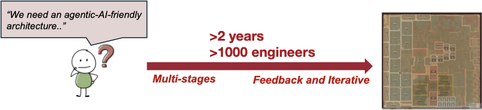
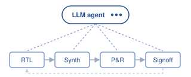
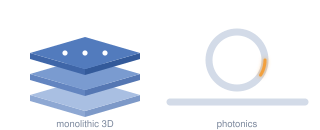

NUS - Wei Li is HiringI am an Assistant Professor in the School of Computing at the National University of Singapore (NUS). My group builds intelligent design automation and testing systems that make chip development faster and more reliable. I am looking for Ph.D. students, postdocs, and master's, undergraduate, and visiting researchers who are excited about EDA, hardware testing, AI/LLMs, and future hardware. AI is driving unprecedented demand for computing, and hardware must learn to answer faster. Ph.D. from CMU, B.Sc. and M.Phil. from CUHK · 2026 ML and Systems Rising Star · Best Paper Awards at ASP-DAC, ISSTA, and ICTAI · More about me OpeningsPh.D.Open
Email me early. Admission is committee-based, and I actively support strong-fit applications through NUS Computing.
Postdoc: AI for Chip Design1 position
3 years, co-advised with Prof. Tulika Mitra, Dean of NUS School of Computing. Good fit for: AI/ML for EDA, LLM agents for chip design, hardware/software co-design. Postdoc Fellowship: 3D-IC Physical DesignOpen
18–24 months, through the NUS ARTIC Fellowship. Physical design for multi-tier 3D ICs, e.g., 3D DRAM processing-in-memory. Requires: a Ph.D. obtained within six years of the start date. Fellows receive their own research grant.
Master's / Undergrad / VisitingOpen
Email me with your CV and interests (see How to Apply). Why Now
Turning a brilliant new architecture into competitive silicon can still take two years and 1000+ engineers, while AI models change every few months.
That gap is what my group attacks. Read the full research vision →
Research Directions 1. EDA Algorithms: Optimization & AIDifferentiable optimization, reinforcement learning, graph neural networks, ... New algorithms for core EDA problems such as routing and layout decomposition. Good fit if you like: algorithms, optimization, machine learning, CS theory. Example: differentiable global routing (DAC'24). Read more →  2. Agentic EDAHow do we bring AI agents into EDA? Agents that read RTL, layouts, timing reports, and tool logs, call EDA tools, check their own progress, and know when to ask a human. Good fit if you like: LLM agents, reasoning, tool use, multimodal learning. Example: BRIDGES, connecting graph-structured chip data with LLM reasoning. Read more →  3. Hardware TestingCan we trust chips after fabrication? Some defective chips pass manufacturing test and later produce wrong results in datacenters without warning (silent data corruption). We study why defects escape and how to catch them, before and after deployment. Good fit if you like: testing, reliability, systems, working with real industrial data. Example: ITC'22: the standard industrial fault model matched only ~5% of thousands of real failures. Read more →  4. Future HardwareDesign automation for 3D ICs, memory systems, photonics, ... As 2D silicon scaling slows, new hardware needs its own design and test tools. We build them together with device and architecture researchers. Good fit if you like: architecture, emerging devices, cross-disciplinary work. Read more → What You Get
Who Should ApplyYou do not need an EDA or hardware background. Many chip-design problems are optimization, graph, generative-modeling, reinforcement-learning, or agentic problems in disguise. My own undergraduate major was computer science. What matters most is curiosity, discipline, and the courage to work on problems that are larger than one person. Coming from AI/CS? Here is a starter guide and reading path → How to ApplyEmail weili3@nus.edu.sg with:
Please use the subject line [Position, Intake] Your Name - Direction, for example [PhD, Aug 2027] Jane Doe - Direction 2. We are still early. The map is not finished (that is exactly why it is a good time to join). More: Research vision Advising statement Starter guide for AI/CS students |